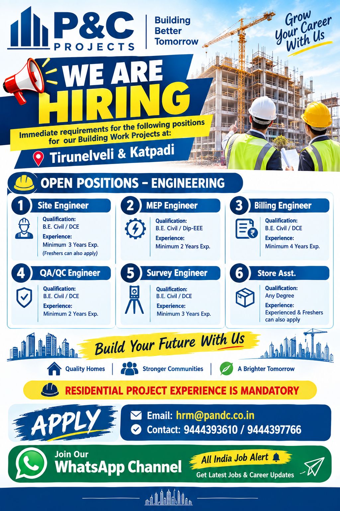

P&C Projects Jobs 2026 – Recruitment Overview
P&C Projects is hiring candidates for immediate requirements related to building work projects in Tamil Nadu. The current recruitment drive includes several technical, engineering and project-support positions at Tirunelveli and Katpadi. Candidates with suitable educational qualifications and relevant construction experience can apply for the position matching their skills and professional background.
The available vacancies include Site Engineer, MEP Engineer, Billing Engineer, QA/QC Engineer, Survey Engineer and Store Assistant. The recruitment information also indicates that freshers can apply for selected positions. Candidates should carefully check the qualification and experience requirements for every role before submitting their application.
These opportunities are connected with building work projects, where employees may work with project engineers, supervisors, contractors, consultants and other construction professionals. Depending on the position, responsibilities can include site execution, quantity measurement, billing, quality inspection, surveying, material management, MEP coordination, documentation and general project support.
1. Site Engineer
Qualification: B.E. Civil / DCE
Experience: Minimum 3 Years Experience
Freshers: Freshers can also apply
The Site Engineer position is suitable for candidates who have knowledge of civil construction and site execution activities. Depending on project requirements, the role may involve supervising daily construction work, coordinating with site workers and contractors, checking drawings and measurements, monitoring progress and maintaining site-related records.
Candidates should be comfortable working at building project sites and should have a basic understanding of construction procedures, safety practices, quality requirements and coordination between different site teams.
2. MEP Engineer
Qualification: B.E. Civil / Dip-EEE
Experience: Minimum 2 Years Experience
The MEP Engineer vacancy is intended for candidates with relevant building services and project coordination exposure. The role may involve coordinating MEP-related activities with civil construction teams and monitoring installation or site requirements according to project needs.
Candidates should understand construction-site coordination and should be able to communicate effectively with supervisors, technicians, contractors and other engineering teams. Relevant MEP or electrical exposure can be useful for this position.
3. Billing Engineer
Qualification: B.E. Civil / DCE
Experience: Minimum 4 Years Experience
The Billing Engineer role is suitable for civil engineering professionals with experience in construction billing and quantity-related activities. Typical responsibilities may include checking quantities, preparing measurement records, assisting with contractor bills, quantity reconciliation and maintaining project documentation.
Candidates should have practical knowledge of civil construction activities and should be familiar with project documentation. Previous experience working with site teams, contractors and quantity records can be useful for this position.
4. QA/QC Engineer
Qualification: B.E. Civil / DCE
Experience: Minimum 2 Years Experience
The QA/QC Engineer position is related to construction quality and inspection activities. Candidates may be required to monitor work quality, check construction activities against drawings and specifications, maintain inspection records and coordinate with project teams.
Applicants should have practical knowledge of civil construction and should understand the importance of quality control at a building project. Experience with inspection documentation, site coordination and quality procedures can help candidates perform the role effectively.
5. Survey Engineer
Qualification: B.E. Civil / DCE
Experience: Minimum 3 Years Experience
The Survey Engineer opening is suitable for candidates experienced in construction surveying and site measurement activities. The role may include setting out works, checking levels, taking measurements, supporting site execution and maintaining survey-related information.
Candidates should be comfortable working at construction sites and should have relevant knowledge of surveying practices used for building projects. The ability to coordinate with civil engineers and site teams is also important for effective project execution.
6. Store Assistant
Qualification: Any Degree
Experience: Experienced candidates & Freshers can also apply
The Store Assistant position is suitable for candidates interested in construction project store operations. Work may include assisting with material receiving, material issue and receipt records, stock maintenance, documentation and arrangement of construction materials.
Experienced candidates can use their previous store or construction material handling knowledge, while freshers can also apply according to the recruitment information provided. Candidates should be organized and comfortable handling basic records and documentation.
Eligibility & Selection Preparation
Applicants should select the position that matches their educational qualification and actual work experience. Civil engineering candidates can review the Site Engineer, Billing Engineer, QA/QC Engineer and Survey Engineer positions based on their professional background. Candidates with suitable MEP or electrical exposure can review the MEP Engineer opportunity.
Before applying, candidates should update their CV with their latest contact number, educational qualification, total years of experience, previous company details, project experience and relevant technical skills. Experienced candidates should clearly mention the type of construction projects handled and their responsibilities.
Freshers applying for eligible positions should mention their educational qualification, internship, training or relevant technical knowledge where applicable. Providing accurate information in the resume is important because the recruitment team may verify the candidate's background during the hiring process.
- Keep an updated CV ready.
- Mention your correct mobile number.
- Clearly mention educational qualification.
- Mention total construction experience, if applicable.
- Highlight relevant project experience.
- Apply only for positions matching your profile.
📩 How to Apply
Interested and eligible candidates can apply for the P&C Projects vacancies by sending their updated resume to the recruitment team. Candidates should mention the position they are applying for in the email subject or message so that the recruitment team can identify the vacancy easily.
📧 Email: hrm@pandc.co.in
📞 Contact: 9444393610 / 9444397766
Candidates are advised to send a recent and updated CV containing their qualification, experience, current location and relevant project details. For freshers, educational and training information should be included.
For further information regarding the current vacancy, job location, joining requirements and selection process, candidates can contact the recruitment team using the details provided above.
📍 P&C Projects Job Locations
The current requirements are for building work projects located at Tirunelveli and Katpadi in Tamil Nadu. Candidates should check the applicable project location for the position they are applying for and should be prepared to work at the assigned project site.
Construction-site positions generally require employees to coordinate with different teams and follow project schedules. Candidates should therefore consider the work location and nature of site duties before applying.
Why Consider These Opportunities?
P&C Projects has announced multiple openings across engineering, construction and project-support functions. The recruitment provides opportunities for professionals with different levels of experience, including selected roles where freshers can also apply.
- Multiple construction-related positions
- Opportunities in Tirunelveli and Katpadi
- Engineering and project-support roles
- Opportunities for experienced candidates
- Selected positions open to freshers
- Exposure to building work projects
Candidates who are looking to develop their career in the construction sector can review the available vacancies and apply according to their qualification and experience. The actual duties and employment conditions may depend on the specific project and position.
Candidates should verify recruitment details directly with the concerned recruitment team before sharing sensitive documents or making any payment. Applicants should never pay money to an unknown person in exchange for a job offer. Always verify the vacancy, selection process and employment conditions through the provided recruitment contact.
📲 All India Job Alert WhatsApp Channel
Get regular updates about construction jobs, civil engineering vacancies, site engineer jobs, supervisor jobs, walk-in interviews and other recruitment opportunities.
JOIN WHATSAPP CHANNELFinal Application Guide
Candidates interested in P&C Projects recruitment should first identify the position that matches their qualification and experience. Site Engineers, Billing Engineers, QA/QC Engineers and Survey Engineers should ensure that their civil engineering qualification and relevant experience are clearly mentioned in the CV. MEP Engineer applicants should highlight suitable MEP or electrical exposure. Store Assistant applicants should mention their degree, store experience or relevant skills.
The application process is simple: prepare an updated CV, mention the position you are applying for and send the resume to the official recruitment email address provided in this post. Candidates can also contact the recruitment team through the listed phone numbers for additional information about the vacancy.
Applicants should keep their documents and qualification certificates ready for any further recruitment or verification process. Candidates should provide only genuine information about their education and employment history.
P&C Projects has listed these requirements for building work projects at Tirunelveli and Katpadi. Since project requirements and vacancy status can change, candidates should confirm the latest details with the recruitment team before making travel or joining arrangements.
For more employment updates, candidates can also follow the All India Job Alert WhatsApp channel. New construction, engineering, supervisor and other job opportunities are regularly shared for job seekers looking for employment across India.